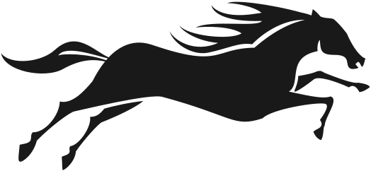
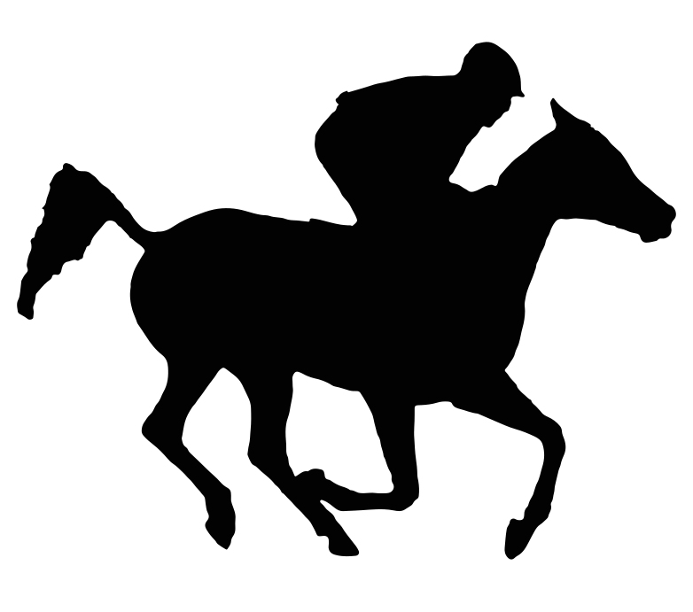

<!doctype html><meta charset=utf-8><style>body{margin:0;background:#fff;font:14px sans-serif}main{display:grid;grid-template-columns:repeat(4,1fr);gap:8px;padding:8px}.box{height:170px;display:flex;align-items:center;justify-content:center;border:1px solid #ddd}img{max-width:95%;max-height:95%}figure{margin:0;text-align:center}</style><main><figure><div class="box"></div><figcaption>A detailed horse</figcaption></figure><figure><div class="box"></div><figcaption>B left-facing</figcaption></figure><figure><div class="box"></div><figcaption>C rearing</figcaption></figure><figure><div class="box"></div><figcaption>D running horse</figcaption></figure><figure><div class="box"></div><figcaption>E galloping splatter</figcaption></figure><figure><div class="box"></div><figcaption>F race horse</figcaption></figure><figure><div class="box"></div><figcaption>G horse silhouette</figcaption></figure><figure><div class="box"></div><figcaption>H arabian racehorse</figcaption></figure></main>